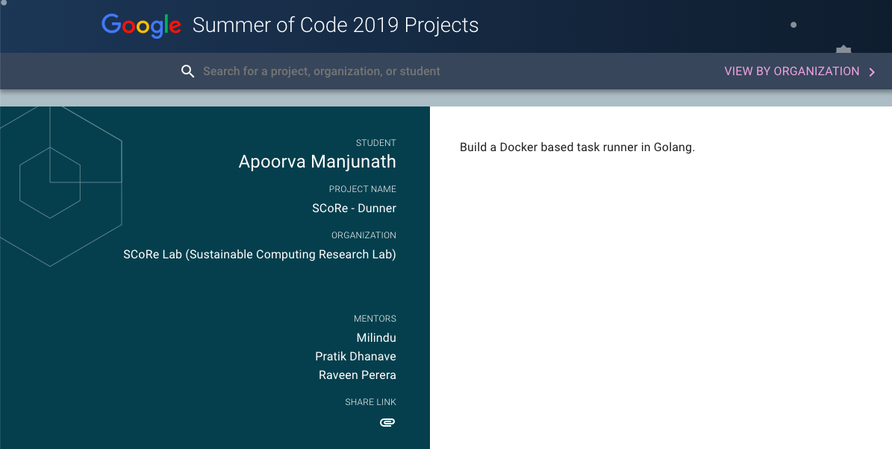

Google Summer Of Code 2019: The curtain falls

This summer I got selected to be a part of Google Summer Of Code 2019 with SCoRe Lab(Sustainable Computing Research Lab) and it just ended. With thousands of lines of code, endless discussions, meetings, pull requests and creative ideas, it was an awesome experience. Though I have worked for software organizations in past, this added a different flavour to it and made me happy. Here is a brief summary of the work.
Dunner, The Docker Task Runner

Abstract
Dunner is an open-source task runner tool based on Docker, simple and flexible and written in Golang. It lets you define Docker tasks, configure the environment and automates execution with Docker container.
Major features include multiple command support, mount external directories, dependent tasks, Dunner Cookbook recipes, Asynchronous mode and environment variables support at global and local scopes. Dunner has easy installation process and multiple ways based on OS and platform.
Useful Links
GSoC Project Page
GSoC Project Proposal
GitHub Organization Repo
GitHub Personal Repo
Commits during GSoC 2019
Commits are spread accross various Dunner repositories, major ones are below:
Project Demo Video
Project Wiki
Project Website
GSoC Blog
Blog post on Dunner, titled “Run your Docker tasks with Dunner, the easy way!”
Summary
The aim of Project Dunner is to speed up the development process by automating deployment, build, release and other tasks using Docker container. Dunner gives the ability to define and configure Docker tasks in a file and hence, easy to share and manage with teams. Through GSoC I got opportunity to make Dunner feature rich and also implement various integrations.
A huge thanks to mentor @agentmilindu for their time and energy with the project, and thanks to @PratikDhanave @rehrumesh @agentmilindu for reviewing all PRs, attending catch-ups and for overall support. Special thanks to @ayushjn20 for being an all round great team-mate!
What was done
I worked on various areas of Dunner major ones including: Dunner, Dunner Cookbook, Release automation, Dunner GoCD Plugin and Documentation guides.
Dunner
- Feature to initialize a project with dunner from command-line
- Implemented Dunner installation through packages as below for all OS/Platform and use Bintray to host some of these packages.
- Homebrew
- Debian/Apt
- Snapcraft
- Yum/Dnf
- Implemented validation for Dunner task file with:
- Generic struture for custom validations for each field
- Standard error messaging
- Ability to define translations for error messages
- Traverse upwards for Dunner task file PR 141
- Implemented execution process of various task steps using Docker SDK
- Customize Dunner task options like User, Environment variables etc
- Initialize project with Dunner Cookbook recipe, along with progress updater
- Added colored ouput and better logging on terminal
- Integrated with CodeCov and improved code coverage of Dunner
Dunner Cookbook
A collection of Dunner recipes, which can be used as templates during initialization of Dunner in a project.
- Designed the structure of this repository so it can be used by Dunner core and by any external sources
- Implemented recipes which can be used to develop, build, deploy and release Golang projects all inside Docker container
Dunner GoCD Plugin
- Performed a feasiblity study and implemented Dunner GoCD Task Plugin for GoCD, an open-source CI/CD Server
- Ability to create a Dunner task with all configurations like mounts, image, envs etc
- Execution result displayed in GoCD result tab and ability to download dunner task file post execution
- Recognized in GoCD Offical website
- Release and usage docs of plugin along with a demo video
CI/CD and Release Automation
Having integrated with CI/CD tools, Dunner has every commit tested, merged and ready to release. Dunner releases are now automated completely! Starting from Github releases, dunner packages publishing to various external repositories like Bintray, Snap, HomeBrew are all just a click work. Integrated with GoReleaser library for generation of distribution packages and shell scripts to publish some artifacts to Bintray.
Dunner Website
- Chose a suitable Gatsby template to use for Dunner website
- Implemented Dunner cookbook page to show all available recipes along with Dunner task file in markdown
- Integrated with Travis CI and added usage docs
Documentation
I believe having a great open source project comes from how easy it is to get started for the community via the project wall, lucid code, documentation and communication channels. I wrote various guides for Dunner and related repositories and made videos for certain usecases.
Related PRs: PR #144
What is left to do
- Dunner as Daemon: With Dunner as Daemon in background, various integrations can be done using the results from Dunner like reporting, profiling, etc. It can also expose various HTTP endpoints to use.
- Task Scheduling: With ability to schedule tasks, Dunner can run docker tasks in background.
- Task Profiling: Statistics on Dunner task execution can be useful to monitor for user.
- Event driven execution: With events defined for tasks like
Step X Started,Image Pull Started,Task Y Completed, it becomes easier for a reciever like Live Output in browser to listen these events and show results - Notifications: When run as daemon, notifications can be sent about execution status through various channels.
References
- Dunner Wiki
- Dunner CI/CD
- Dunner Bintray
- Dunner Plugin listing on GoCD
Try out Dunner and let me know what you think :)